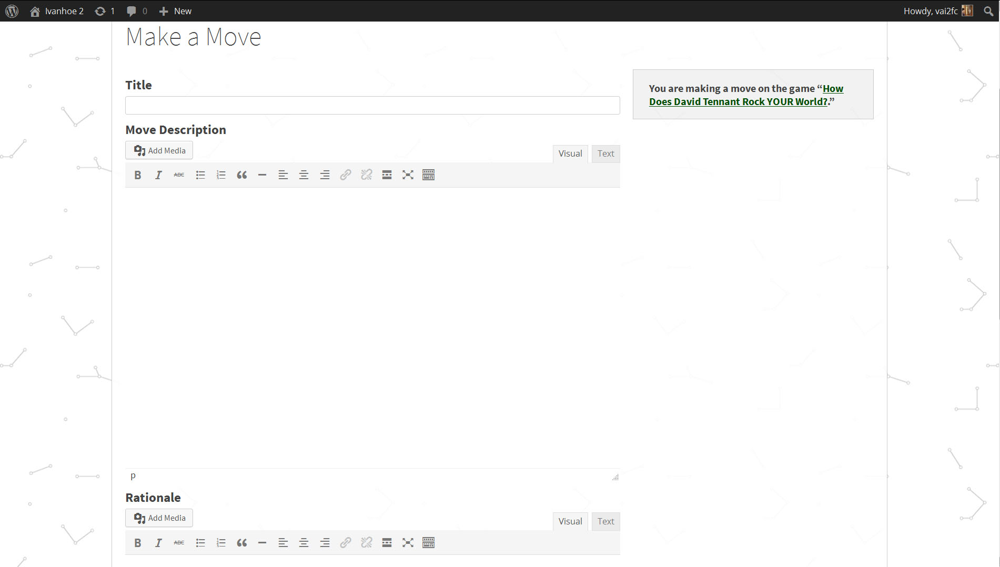

Documentation
Here you will find instructions on How to Play in Ivanhoe and How to Contribute to Ivanhoe.
How to Play
Adding Users and Players
Once you have downloaded the theme, as an administrator you can invite users to participate and play in Ivanhoe. You can either add users manually or allow anyone to register.
If you want control over who can access your learning environment the best option is to manually add users to your Ivanhoe theme.
If you wish for users to access your games and create a larger network of users you should make your games available for anyone to register.
Adding Users Manually
- Log into your WordPress Administration Panel (Dashboard).
- Click on the “Users” tab on the left hand side of the screen.
- Click the “Add New” button at the top of the screen.
- Fill in the fields as required.
- Assign a Role: Unlike a typical WordPress, all roles have the same capabilities. Users of all levels may make moves, make roles, and create new games. However, only administrators may add new users. If you want to be the only user who may edit elements of the game, you may wish to make specify this in the Game Description field. See "Game Description Fields" below for more information.
- When all fields are complete, click “Add New User.”
NOTE: You must assign users a “username” and “password” and provide the user's e-mail address. We suggest making the username a variation of the user’s actual name and making the password something easy to remember. For example if the person who you wish to register’s name is John Smith an easy to assign username would be something like “JSmith” and the password could be “1234!@#$” – users have the ability to change both their username and password after accepting their invitation to play.

Allowing Users to Register
- Log into your WordPress Administration Panel (Dashboard)
- Click on "Settings." This will take you to the "General" settings.
- Under "Membership," select the box "Anyone can register."
- Under "New User Default Role," select "Author," "Editor," or "Administrator."
- Click "Save Changes" at the bottom of the page.
When you play Ivanhoe you can start by creating a new game, making a role, or by making a move inside of an existing game. When you are making a connection inside of an already existing game, you are creating a role or making a move. When you are building a new space for play, you are starting a new game.
Starting a New Game
- Click on the "Games" tab in the navigation menu.
- Click on the "Make a Game" button.
- Create a title for your game, a game thumbnail (optional), and a game description.
- When you are ready, click “Save.”
Understanding Game Fields
Game Title
Create a title that best expresses what your game entails and piques the interest of potential players.
Game Thumbnail
Select an image to be displayed with your game description.
Game Description
In this field we suggest listing the objective of your game. What do you want players to achieve? Do you want to have rules? Is there a way to win? There are many ways you can play Ivanhoe. Using the "Add Media" button, you can insert an image, video, or audio file as part of the game description.
You can start with just the objective of the game and see where players take it. You can start with a suggested list of roles or have players invent them on their own! The sky is the limit in terms of creativity and functionality so be sure to take some time to think about how you want to play the game before completing this section.
Making a Role
- Choose a game that you would like to play.
- Once inside of the game carefully read the game description to give you an idea of what kind of role you want to create. The game you enter may have rules that pertain to the type of role you can create.
- Click on the "Make a Role" button.
- Role Name - create a character that you will play as throughout the game.
- Role Thumbnail – choose a featured image to be associated with your moves inside of the game and the image that other players will see during the game.
- Role Description – Create an identity for your role. Who is it that you are playing? What characteristics are important for other players to know about you?
Making Moves
After you have created a role you can make a move in two ways. You can start a new move or you can “respond to a move” that another player has made.
To Make a New Move Outside of an Existing Move
- Click on the “Make a Move” button in the upper right hand corner of your screen.
- Move Title: What do you want your move to convey? Like other titles you can use a combination of words and characters that tell other players in the game what your move is trying to accomplish.
- Move Content: Add media and/or text relevant to your move. This is the information that other players will see so be sure it adequately describes what you are trying to do with this move as well as information needed so that others can play off of it. (NOTE: If you are embedding a video into your post you must be in the “text” field not the “visual field.”)
- Rationale (optional): Depending on the settings of the game, you may need to complete the rationale section. This section provides a bit more context for your move but is not visible to other users. The space should be used for players as a reminder for why they made the moves that they did. This information is also aggregated into a “Role Journal” so that players (and administrators) can see how moves fit together over time.
- When you are finished with your move click the “submit” button to make your move visible to other players in the game. Be sure to review your response before submitting, as you are unable to edit your move once it is played.
To Respond to an Existing Move
- Click the “Respond” button in the upper right hand corner of the move space.
- Move Title: What do you want your move to convey? Like other titles you can use a combination of words and characters that tell other players in the game what your move is trying to accomplish.
- Move Content: Add media and/or text relevant to your move. Think about how this move connects to the move that you are responding to. (NOTE: If you are embedding a video into your post you must be in the “text” field not the “visual field.”)
- Rationale (optional): Depending on the settings of the game, you may need to complete the rationale section. This section provides a bit more context for your move but is not visible to other users. The space should be used for players as a reminder for why they made the moves that they did. This information is also aggregated into a “Role Journal” so that players (and administrators) can see how moves fit together over time.
- When you are finished with your move click the “submit” button to make your move visible to other players in the game. Be sure to review your response before submitting, as you are unable to edit your move once it is played.
Inserting Media
If you wish to enhance your games, roles, or moves with media (photos, movies, songs) you will need to click on the “Add Media” button. Doing so will bring you to a space where you can upload more files or add files that have already been uploaded. Files that have already been uploaded are under “Media Library.”

Uploading a New File
- Click on Upload Files link
- Click on the “Select Files” button to upload a photo/movie from your harddrive or click on “Insert from URL” link on the left to add content already available on the Internet. If selecting a new file, choose the content you wish and then click the “open” button.
- Once file/URL had been selected click “Insert into Page”
Using the Media Library
Select the file that has already been uploaded and click “Insert into Page”
How to Contribute
Here is a quick guide for contributing developers:
- Install Wordpress (as instructed before you download the Ivanhoe theme.)
- Have a copy of our Ivanhoe WP Theme downloaded and running.
- Install an up to date version of Ruby, several Ruby Gems (you can bundle-install them) in order to run Sas.
- Run the Css pre-processor. Here is an example of what command you would use for this.
- Note that we use Sas as a pre-processor framework, Compass as a general Sas library, and Susy as a grid framework.
- Create a GitHub account and have Git installed on your computer.
- Send us a pull request.
- Fork our Github repository to your own Github account and clone your copy of Ivanhoe in your WordPress installation, in the Themes directory.
- Make the suggested changes in a separate topic branch on Github, specific to the feature you want to provide or the bug you want to fix. (Note: If you want to edit a Css file, do not edit the stylesheets directly, but edit the Sas files, and recompile them when you want to push the changes.)
For more detail on how to contribute on GitHub check Jeremy's blogpost.